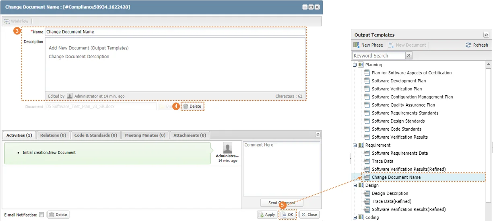

|
사용자가 새로운 산출물(Output)을 등록할 수 있다.
① 산출물을 등록하고자 하는 Phase를 선택한다.
② ‘Output Templates’ 목록 상단 ‘New Document’를 클릭한다.
③ 또는, Phase를 우클릭하여 ‘New Document’ 버튼을 클릭한다.
|
④ ‘New Document’ 창이 생성된다.
⑤ 추가하고자 하는 산출물에 대한 정보(Name, Description)를 입력한다.
|
⑥ 산출물을 등록하기 위하여 ‘Browse’ 버튼을 클릭하고 사용자 PC에 저장되어 있는 산출물 템플릿 파일(MS-Word)을 선택한다.
|
⑦ ‘Delete’ 버튼을 클릭하여 선택된 산출물 템플릿 파일을 삭제할 수 있다.
⑧ ‘Apply’ 버튼을 클릭할 경우 임시저장된다. ‘Output Templates’ 상단의 Refresh 버튼을 클릭하면 임시저장된 산출물이 등록된다.
⑨ ‘OK’ 버튼을 클릭하여 추가를 완료한다.
⑩ 해당 Phase에 Templates 가 추가된다.
|
사용자가 산출물(Output) 정보 또는 정보를 수정할 수 있다.
① 산출물을 선택하고 마우스 우클릭한다.
② 마우스 우클릭을 통하여 생성된 메뉴 중 ‘Detail Info’를 선택한다.
|
③ 산출물 정보창이 생성되면 수정하고자 하는 정보(Name, Description)를 수정한다.
④ 등록된 산출물을 변경할 경우 Document 항목의 ‘Delete’ 버튼을 선택하여 산출물을 삭제하고, ‘5.2 산출물 추가’ 항목에 따라 산출물을 등록한다.
⑤ 산출물 정보 확인 또는 수정이 완료되면 OK 버튼을 클릭한다.
 |
사용자가 산출물(Output)을 삭제할 수 있다.
① 삭제하고자 하는 산출물을 선택하고 마우스 우클릭한다.
② 마우스 우클릭을 통하여 생성된 메뉴 중 ‘Delete’를 선택한다.
③ ‘Delete’ 창이 생성되면 ‘Yes’ 버튼을 클릭한다.
|